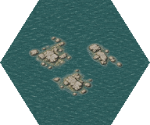
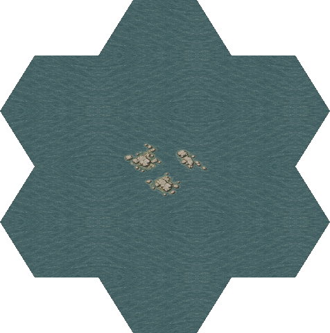
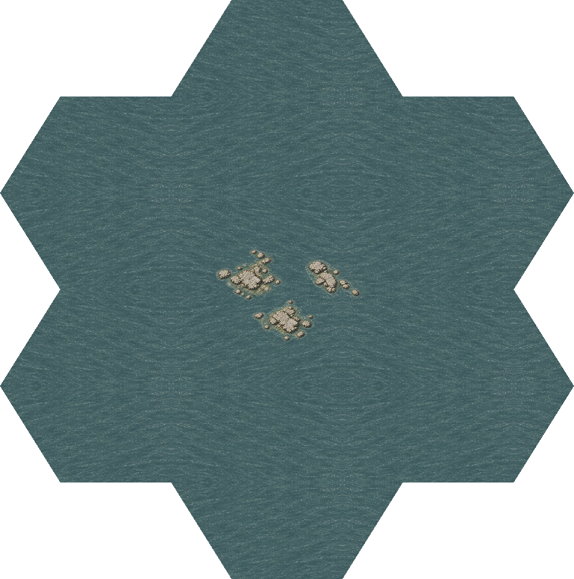
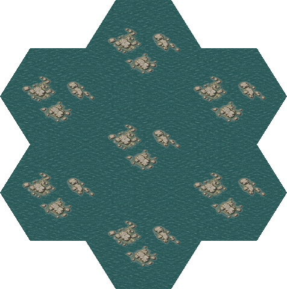
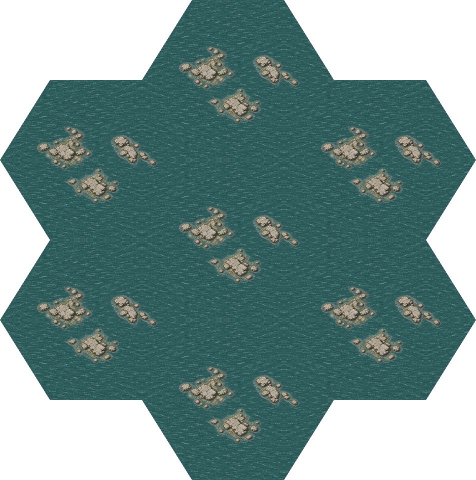

waterStones

Current scene refresh · 2026-10-20: RefDesign materials and rebuild details · Current art and generation prompts · PULSE: DOS / Amiga, 1× / 2× / 4× and game captures.
Three new low limestone outcrop groups, fine local shallows and continuous shared water at 2× and 4×. Overhead illustration, uniform whole-scene Lanczos resizing and complementary hex ownership.
Provisional candidate. Dense repeated coverage exposes the same three-group arrangement; placement/shape variation and full-map/runtime acceptance remain open. Updated 2026-10-20: the water base now matches the DOS-inspired shore refresh, including the mixed-shore and repeated-rock contexts. Refresh details.
Review and verification · Geometry and shared-water contract · Shores · Terrain · Manifest









